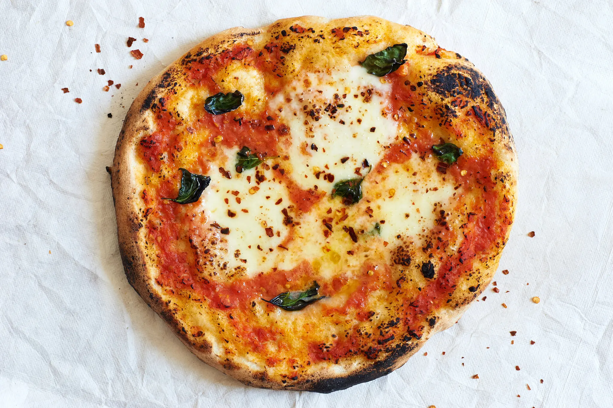

Back to Home
pizza Margerita

Here's a simple recipe for a delicious Margherita pizza!
Description
A classic Margherita pizza is a simple yet flavorful Italian dish made with a thin, crispy crust, rich tomato sauce, and fresh mozzarella cheese. The combination of these fresh ingredients creates a perfect balance of taste and texture, making it one of the most loved pizzas around the world.
Traditionally topped with fragrant basil leaves and a drizzle of olive oil, Margherita pizza celebrates the beauty of simple cooking. Whether served for lunch, dinner, or a casual gathering, its fresh flavors and authentic taste make it a timeless favorite for pizza lovers of all ages.
Ingredients
- 1 pizza dough
- 1/2 cup tomato sauce
- 1 cup shredded mozzarella cheese
- Fresh basil leaves
- Olive oil
- Salt and pepper to taste
Steps
- Preheat your oven to 475°F (245°C).
- Roll out the pizza dough on a floured surface to your desired thickness.
- Spread the tomato sauce evenly over the dough, leaving a small border around the edges.
- Sprinkle the shredded mozzarella cheese over the sauce.
- Add fresh basil leaves on top of the cheese.
- Drizzle with olive oil and season with salt and pepper.
- Bake in the preheated oven for 10-12 minutes or until the crust is golden and the cheese is bubbly.
- Remove from the oven, slice, and serve hot!